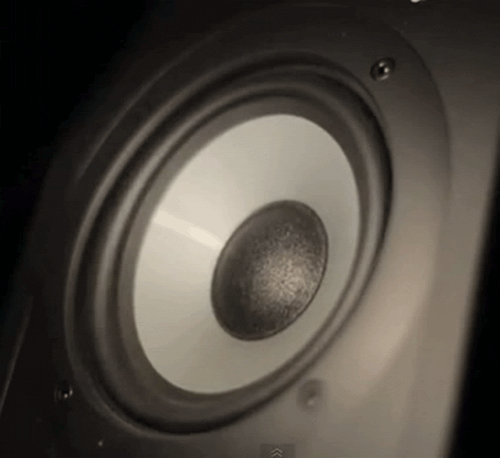
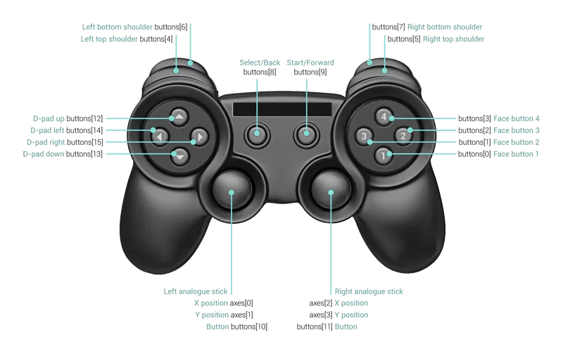
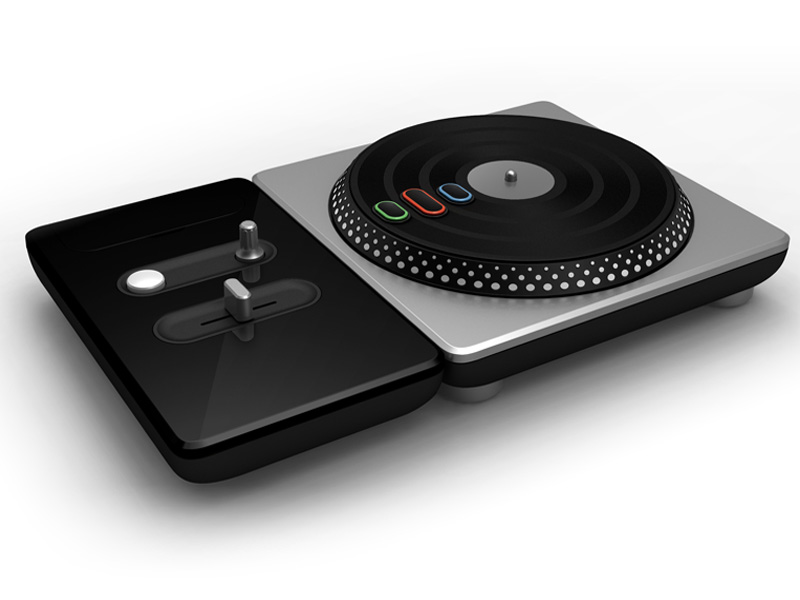

Building a collaborative audio editor based on the Web Audio API
Scotland.js 2014
Me
@thedeftone
Frontend Developer from Berlin
Not really a music background but
passionate about music
used to play in a band, never in front of a big audience, biggest audience was when I played a js-controlled guitar-hero guitar at reject.js last year ;)
motivation: learning new things (audio essentials), experiment
Audio on the Web
bgsoundobject, embed< audio />low-level access to all things audio
create sounds
manipulate sounds (filters)
timing sounds precisely
tons of other cool stuff (spatial audio, audio analysis)
create: literally! create sounds from waves
manipulate: a rich api to create custom filters easily
precision: timing is everything when dealing with more than one sound
Who feels comfortable with his knowledge about the physical basics of audio?
What is sound?
"Sound is a mechanical wave that is an oscillation of pressure transmitted through some medium, composed of frequencies within the range of hearing."
- Wikipedia
I just want to get the basics right.
when I stomp my feet on the ground, a pressure wave is created that oscillates and wanders through the ear into your ears
What does sound look like?

a 61 Hertz tone in slow motion
the speakers in this room are right now doing exactly the same
we can see the sine movement
When contrast is too low: CTRL + ALT + CMD + 8 to the rescue
Let's oscillate!
var context = new webkitAudioContext();var oscillator = context.createOscillator();oscillator.type = 0; // -> sine oscillator.frequency.value = 22000;oscillator.connect(context.destination);oscillator.noteOn(0);
Play 22kHz
Play from range
Sine
Square
Triangle
Stop
context: same as with a canvas object
there are several forms of waves: sine, sawtooth, triangle
spot the biological error ;) -> humans can't hear 22kHz
Let's play sounds from files
1. Load the file
var xhr = new XMLHttpRequest();
xhr.open('GET', '/get_lucky.mp3', true);
xhr.responseType = 'arraybuffer';
xhr.onload = processFile
xhr.send();
Weee, it's only AJAX, we don't need to know anything new :) -> maybe the arraybuffer
Let's play sounds from files
2. Process the response
context.decodeAudioData(xhr.response, function(buffer) {
songBuffer = buffer;
}, function(e) {
console.log('Whoops, sth. went wrong');
});
Let's play sounds from files
3. Play it
var source = context.createBufferSource();
source.buffer = songBuffer;
source.connect(context.destination);
source.start(0);
Play 'Get Lucky' from Daft Punk
Play a GEMA-free song
Let's for example play Get Lucky
thanks for interfering with my talk GEMA!!!
IMPORTANT: such nodes are one-off nodes, once you stop them, you can't play them again, you have to create a new node, Buffers still exist
Filters
change the output by manipulating the frequency spectrum
most basic filters are already implemented
custom filters can be created easily
custom filters need to be highly performant, people who have been to nodecopter.js last year know the limits of JS-processing, when they were analyzing image date, same need for speed here...I will not cover custom filters, because it's too complex
Basic filters
var filter = context.createBiquadFilter();
filter.type = filter.LOWPASS;
filter.frequency.value = 100;
// put the filter in between song and speakers
song.connect(filter);
filter.connect(context.destination);
Timing
Timing is key!
before: setTimeout / requestAnimationFrame
lots of offset-calculations
inaccurate
timing beats, songs, bits of songs
everyone hears that somethings's wrong in a song when beats are off just for some miliseconds
professional musicians even sometimes complain about delays on stage
scientific fact: people can adopt to delays, when it's stable ;)
Timing in Web Audio
Timing is relative to the current context!
context.currentTime // -> time bar in seconds
context.currentTime is like a time bar, it starts once you play the first tune and will then go on forever...
Timing in Web Audio
Let's start a buffer in 2 seconds
sourceNode.start(context.currentTime + 2);
sourceNode.start(when, offset, duration);
Play with 2s delay
Play with some offset
Stop in 2s
when: start at that time on the time bar, if < currentTime then starts immediately;; offset: offset in the current buffer
same goes for the stop method
imagein how hard it would be to code that with settimeout, setinterval
NO MORE SETTIMEOUT!!!!
Timing in Web Audio: Future Value(s)
The API even allows to set values in the future:
node.gain.setValueAtTime(.2, currentTime + 5);
node.gain.linearRampToValueAtTime(0, currentTime + 5);
Set gain to .2 in five seconds
gain = volume
linear, exponential, event own curves, but too complex to show now
Demos
The hello world of Web Audio API - a drum machine
Plink!
Jam with chrome
what can you use the API for
if you want to get started with the web audio API, I suggest you start by implementing a drum machine, it's not too hard and you'll get familiar with the timing system, nodes and buffers very easily
the current implementation uses buffers, but synthetic sounds are possible, too
you can do literally everything audio related with it, cut music, mix music, maybe even build a mini garageband in the browser (my master thesis btw)
Let's talk about Gamepads and Gaming
More complex games are written in JS (Canvas, WebGL)
Controlling games: W, A, S, D or arrows + mouse + keys
Problem: digital vs. analogue values
Wouldn't it be nice to use gamepads in your browser?
digital: only zero and one values when pressing a buttons
analogue: values between zero and one, where zero is minimum and one is maximum
granular intensity, axes on buttons
e.g. speed of character
mocking is possible by adjusting speed based on time a button is pressed
Introducing: Gamepad API
Use all your favorite Gamepads in your browser!
Gamepad API 101
var gamepads = navigator.webkitGetGamepads()
var firstPad = gamepads[0];
firstPad.buttons; // -> Array[17]
firstPad.buttons[0]; // -> 0
Short reminder: again the examples only work in chrome/webkit
Wow, what? 17 Buttons?
aaand we're digital again -> buttons are digital
Gamepad API 101
firstPad.axes; // -> Array[4]
firstPad.axes[0]; // -> 0.38765
Axes range from -1 to 1
this is where you get the precision
But how am I supposed to know which button has which index?

Did you notice something?
var gamepads = navigator.webkitGetGamepads()
var firstPad = gamepads[0];
firstPad.buttons; // -> Array[17]
firstPad.buttons[0]; // -> 0
It's not event-driven!
API is designed for usage in games
Games often have an update()-loop where they poll gamepad states
We're back at requestAnimationFrame
Events may be added in the future
Not event driven? But why? How? What?
Polling for available gamepads and each of their states necessary
Not common for web developers but easy to adopt to
How do we combine the APIs?
if(gamepad.buttons[0] == 1)
sound.start(0);Let me show you how that works
But...
Let's talk about Gamepads again!
What exactly qualifies as a Gamepad?
"If it has a button, it is a Gamepad!™ "*
* (assuming that your browser knows how to interface it)
Wasn't that fun?
Unluckily gamepads like this one don't really qualify for music production, so what are the alternatives?
guitar.js / alleinunterhalter.js
Let's play some guitar
(Don't forget to tune the guitar!)
Unforunately my xbox drum kit died yesterday, I was raging...in general it works, it would have been a band playing on stage then and not just a solo-entertainer <-- explain this while playing
DJ Hero turntable

DJ Hero is Guitar Hero with turntables
looks way more suited to music making, doesn't it? DESCRIBE BUTTONS!
The best part about it: the gamepad api is capable of dealing with it!
Let's see what we can do with it :)
dj.js
Connect your DJ Hero Gamepad and mix it!
(Push the button as if you were Skrillex!)
Originally this demo wasn't planned but since the drum set broke down, I had to come up with something new ;)
DISCLAIMER: no scratching!!!!! Will explain later!
explain functionality: gain, effects, cue-ing, tunrtable(-lock)
first time dj performance in front of anyone else but the wasps in my room :D
API problems (Web Audio API)
Still unstable: browser may crash when doing fancy stuff
No negative playbackRate, yet
currentTime of BufferNodes would be aweswome
Only one destination for now
especially when it came to custom-filters it was very unstable
negative playback is needed for scratching :D
currently this needs to be calculated in relation to to context - even the audio element has it!
DJs need to pre-listen to parts of the songs to mix properly, therefore two soundcards are used, currently there's only one speaker to connect the sounds to
API problems (Gamepad API)
Unstable API (FF/Chrome incomptatible)
Events, please ;)
Let me talk to the Gamepad: rumble, LEDs
Sometimes unstable and doesn't connect the Gamepads
Please add the Guitar Hero drum kit, so we can have a rockband.js
Wrapping it up
The Web Audio API is incredibly powerful
The Gampad API is awesome and easy to use
When combined, they allow to play 'real' instruments in your browser
I can see things like Garageband.js with DJ equipment in the future!
THX so much for your attention!
I hope that I will find another working drum kit so that we can have a nice rockband.js in the future, thx :)